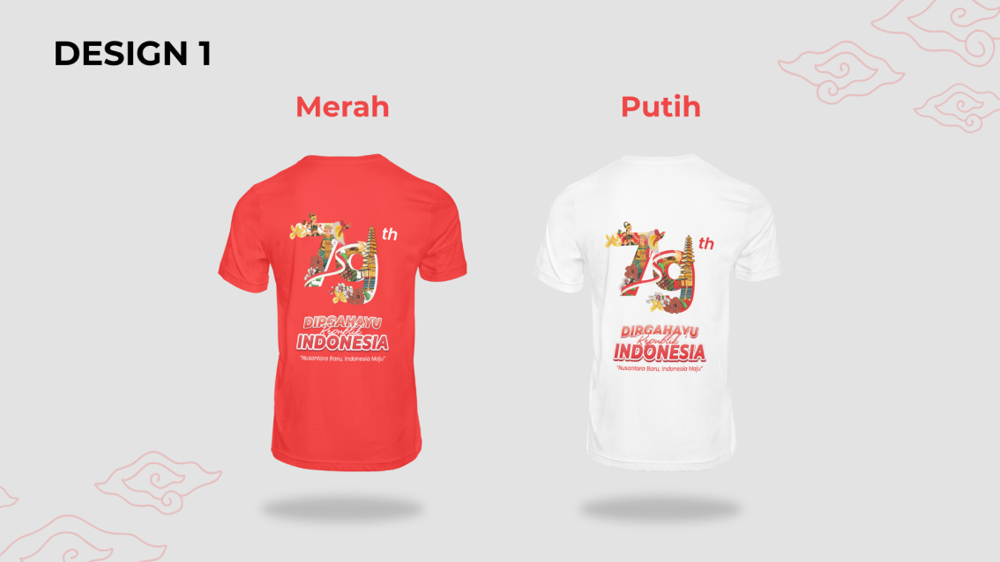

Promo besar satu set kaos anak spesial hari kemerdekaan

Produk Kami

BERBAHAN SOFT KOTTON 24S SEHINGGA NYAMAN DAN LEMBUT SAAT DIPAKAI
Koleksi baju kemerdekaan kami yang dirancang khusus untuk memperingati dan merayakan hari bersejarah 17 Agustus. Dengan desain yang menggabungkan nuansa tradisional dan modern


PROMO KAOS ANAK DAN DEWASA